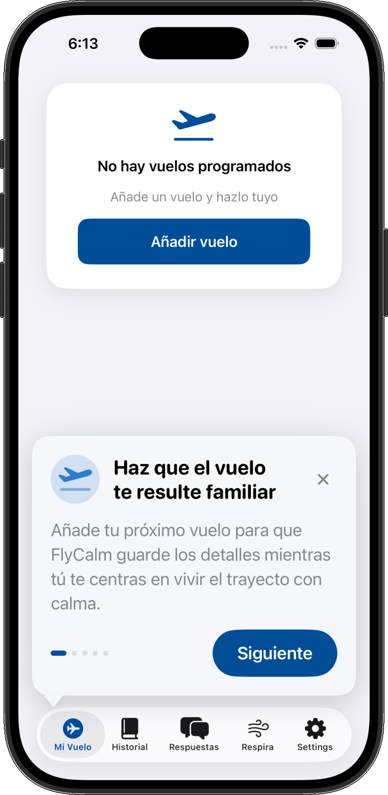

A redesign of onboarding and in-flight breathing flows for anxious flyers, built around the moments people actually reach for the app: the gate, the climb, and turbulence.

Analytics showed a sharp drop-off: 61% of new users never finished a first breathing session. Most installs happened within 48 hours of a flight — often at the airport — yet onboarding asked for a profile, a goal, and a reminder schedule before anything calming happened.
The content was good. The path to it was five taps too long, and it assumed a calm, unhurried person.
Twelve interviews with self-identified anxious flyers, plus a diary study across nine flights. Three findings shaped everything after.
Boarding, takeoff, and turbulence. Nobody browses a library mid-climb.
People close their eyes, grip armrests, and hold the phone one-handed against a tray table.
Any spinner in the air reads as "the app failed me" at the worst possible moment.
The app opens straight into a 90-second guided breath. Account creation moved to the end of the second session, framed as saving progress rather than a gate.
Instead of a library, the home screen asks a single question — "where are you right now?" — with three answers: gate, takeoff, turbulence. Each maps to one prepared session.
Haptic pacing carries the breath rhythm, so the session works with the screen face-down. Controls sit in the bottom third at 56px targets, reachable one-handed.
Sessions for an upcoming flight are pre-downloaded when a boarding pass date is added. Nothing in the air depends on a connection.
First-session completion, up from 39% to 54%.
More sessions started in the air, where the app matters most.
App Store rating, with "it just starts" recurring in reviews.
The three-moment model works for short-haul flights but flattens long-haul, where anxiety is more diffuse. I'd test a quieter ambient mode for cruise, and bring the clinical advisor into copy review earlier — the language of the sessions did more for trust than any interface decision.